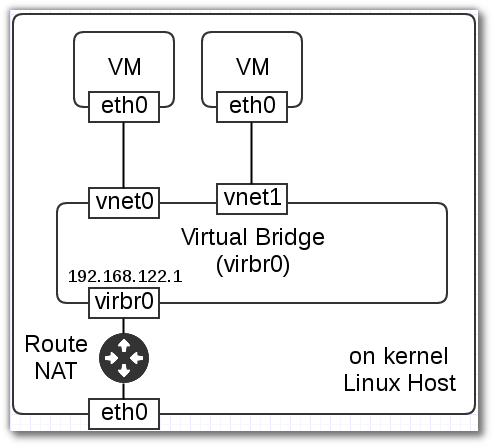

Bridge Networking KVM¶
setup on KVM¶
มีหลายวิธีสำหรับในการบริหารจัดการ Networking in KVM เพื่อที่จะให้ vm สามารถติดต่อออกสู่ภายนอกได้ โดย Default เป็นการเชื่อมต่อภายนอกแบบ NAT network โดยสร้าง Virtual network (virbr0) เพื่อให้ vm มาเกาะเพื่อออกไปสู่internet และ vm จะได้รับ ip จาก virtual network
linux bridge module¶
การใช้งาน linux bridge จะต้องมี module ดังนี้ (ทำบนเครื่อง host)
sudo su -
modinfo bridge
filename: /lib/modules/4.6.7-300.fc24.x86_64/kernel/net/bridge/bridge.ko.xz
alias: rtnl-link-bridge
version: 2.3
license: GPL
srcversion: C24028014A70FF3D3627689
depends: stp,llc
intree: Y
vermagic: 4.6.7-300.fc24.x86_64 SMP mod_unload
Linux Bridge (test on vm)¶
:: mkdir bridge cd bridge vagrant init centos/7 vagrant up –provider libvirt
ตั้งค่า eth0 ให้เป็น static :: vagrant ssh nmcli con mod
Network Infrastructure¶
(on host) virsh command ————- libvirt command
sudo su -
virsh net-list
Name State Autostart Persistent
----------------------------------------------------------
default active yes yes
vagrant-libvirt active yes yes
ตรวจค่าของxml ของ network ชื่อ default ด้วยคำสั่ง virsh
virsh net-dumpxml default
<network>
<name>default</name>
<uuid>88ec8022-2026-461b-bf66-7daaf33c8fc5</uuid>
<forward mode='nat'>
<nat>
<port start='1024' end='65535'/>
</nat>
</forward>
<bridge name='virbr0' stp='on' delay='0'/>
<mac address='52:54:00:c1:9f:ed'/>
<ip address='192.168.122.1' netmask='255.255.255.0'>
<dhcp>
<range start='192.168.122.2' end='192.168.122.254'/>
</dhcp>
</ip>
</network>
การแก้ไข ใช้คำสั่ง virsh net-edit default จะส่งผลให้ เปิด xml ด้วย vi สามารถทำการแก้ไขค่า และเมื่อแก้ไขเสร็จแล้วก็ save เหมือน vi
virsh net-edit default
ตรวจสอบ package bridg-utils ว่าติดตั้งหรือไม่
rpm -qa | grep bridge-utils
bridge-utils-1.5-13.fc24.x86_64
brctl command¶
linux bridge command
brctl show
bridge name bridge id STP enabled interfaces
virbr0 8000.000000000000 yes
Create Bridge network¶
1 สร้าง bridge network
brctl addbr mybridge
brctl show
//ผลที่ได้
bridge name bridge id STP enabled interfaces
...
mybridge 8000.000000000000 no
virbr0 8000.000000000000 yes
virbr1 8000.525400ef43c5 yes virbr1-nic
2 เพิ่ม interface (ตรวจสอบด้วย ip link) enp3s0 ให้แก่ brige
brctl addif mybridge enp3s0
brctl show
...
bridge name bridge id STP enabled interfaces
mybridge 8000.54ee758a8609 no enp3s0
3. ลบ ip enp3s0
ip addr del flush dev enp3s0
ip addr add 192.168.1.69/24 dev mybridge
ip link set dev enp3s0 down
ip link set dev enp3s0 up
ip link set dev mybridge up
ping google.com
4 verify gateway
ip r
default via 192.168.1.1 dev enp3s0 proto static metric 100
การใช้งานคำสั่ง NetworkManager Command Line Tool (nmcli) เพื่อสร้าง bridge br0
nmcli con add type bridge ifname br0
Connection 'bridge-br0' (d50d5fc4-ca17-4e98-b9b3-b9fdcae2e248) successfully added.
NAME UUID TYPE DEVICE
bridge-br0 d50d5fc4-ca17-4e98-b9b3-b9fdcae2e248 bridge br0
Note
nmcli con add type bridge ifname br0 con-name bridge-br0
enable Spanning tree protocol(STP) เปลี่ยนค่า defalut priority จากค่า default 32768 เป็น 28672
nmcli con modify bridge-br0 bridge.stp yes
nmcli con modify bridge-br0 bridge.priority 28672
ตรวจสอบค่าของ bridge
nmcli -f bridge con show bridge-br0
//
bridge.mac-address: --
bridge.stp: yes
bridge.priority: 28672
bridge.forward-delay: 15
bridge.hello-time: 2
bridge.max-age: 20
bridge.ageing-time: 300
bridge.multicast-snooping: yes
สร้าง port บน switch (type bridge-slave con-name br0-port1) ให้เชื่อมกับ ifname enp3s0
nmcli connection add type bridge-slave con-name br0-port1 ifname enp3s0 master bridge-br0
Connection 'br0-port1' (702a354e-e641-4c06-b05f-61332cd1232b) successfully added.
ตรวจสอบ
cd /etc/sysconfig/network-scripts/
ls
..
ifcfg-br0-port1
ifcfg-bridge-br0